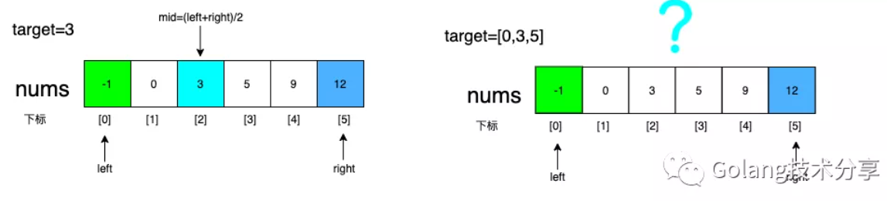
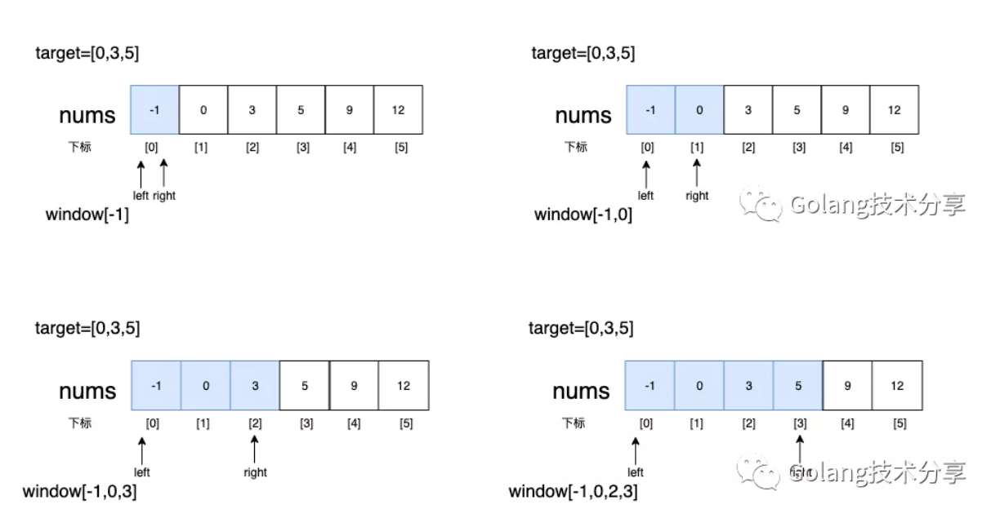
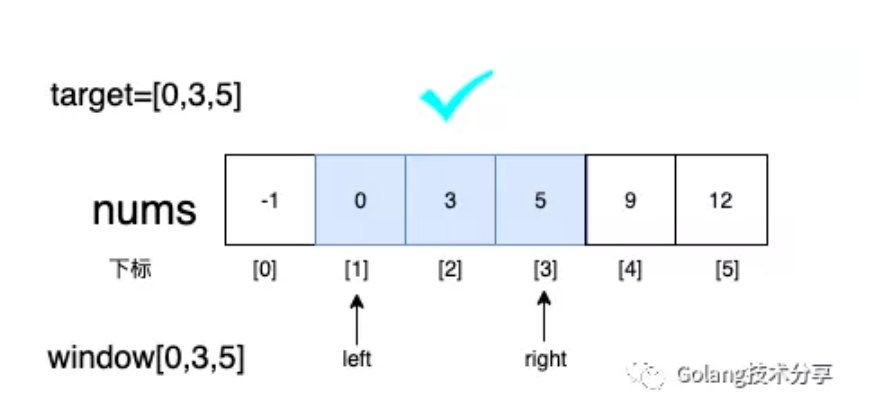
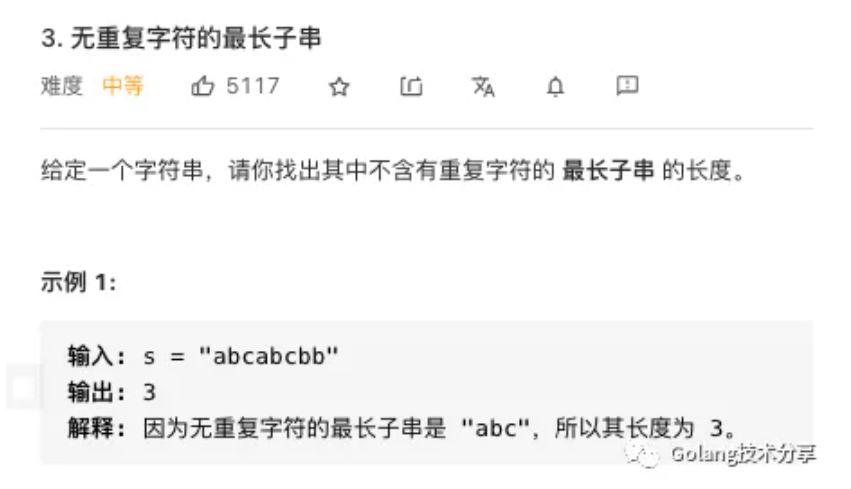
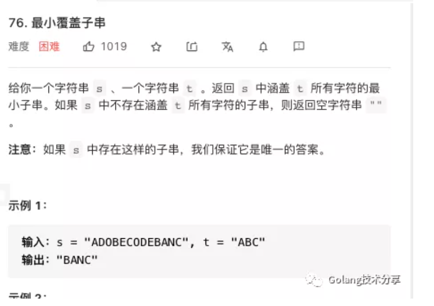

面试题型系列：滑动窗口技巧
本文是公众号读者上山打老虎的第二篇原创投稿，主要内容是讲解算法技巧之滑动窗口。上山兄一直保持着刷题的习惯，并形成了自己的一套做题心得，当然他也是无情的offer收割机。同时上山兄会持续给本号投稿算法类文章，代码示例均采用Go语言，希望该算法系列文章有助读者更好地备战面试。
在数组中查找一个数，可以使用二分法查找，但是算法问题中还有一些是在数组（或字符串）中查找一个子区间，这时滑动窗口就是一种很好的解决思路。

很多同学学过滑动窗口算法，但是一做题就错，这是因为有很多细节问题会在解答时出错，本文将依次介绍该算法的模板，易错点，分类题型，希望读者看完之后能极大的提高做题速度以及准确度。
什么是滑动窗口
概念
滑动窗口是双指针算法的一种，利用双指针在数组单一方向滑动，形成一个子区间，对子区间进行剪枝，最终得出满足条件的解。
过程
window中元素未完全包含target时，right向右滑动

此时window包含target中所有元素，将left向右滑动

Go代码模板
1 | 1func checkInclusion(nums []int, target []int) bool { |
易错点
- left和right滑动时，容易漏掉某个变量的值变化，这里教大家一个技巧，每次写完复查前面声明的变量，在滑动时是否改变
- left右滑动时，先判断是否满足条件，再做变量值的变化，颠倒会导致第一次满足条件的解漏掉
例题解析
值匹配

这道题是求最长子串，这里我们需要敏锐地捕捉到“子串”关键词。该题中，我们把字符串当做数组，“子串”就是子区间，这赤裸裸的就是滑动窗口的题型呀。
废话不多说，直接先上模板！
1 | 1func lengthOfLongestSubstring(s string) int { |
分析
- 满足left右滑动的条件：无重复字符，即右滑时window容器中每个元素值<=1
- 是否更新结果值条件：在window中无重复的元素后，即for循环之后，判断res-left与之前无重复字符串最大长度（res）之间关系
- right右滑动变量变化：参照声明的四个变量，这题只有winow和right变化
- left右滑动变量变化：参照声明的四个变量，这题只有winow和left变化
1 | 1func lengthOfLongestSubstring(s string) int { |
区间匹配

很明显这又是一个求子串的问题，分析如下
- 满足left右滑动的条件：这题和前言中题类似，设一个target切片记录目标区间每个元素的个数[A:1,B:1,C:1]，当window中所有目标元素个数（vaild）都达到target要求时，left右滑缩小区间
- 是否更新结果值条件：在left右滑时，即for循环中判断当前right-left与之前最小覆盖子串之间关系
- right右滑动变量变化：参照声明的变量有当前区间window，达标元素个数vaild，窗口右边界right
- left右滑动变量变化：参照声明的变量有起始位置start，结果字符串长度res，达标元素个数vaild，当前区间window，窗口左边界left
1 | 1func minWindow(s string, t string) string { |
总结
题型：求子串、求子数组，在这样的题目关键字中，我们可以考虑通过双指针单向滑动剪枝出满足条件的区间
记住模板：一容（window），二变（left，right），三扩（right右移），四缩（left右移）
思路：俩个条件（left右滑条件，是否更新结果值条件），俩个变化（right右滑动变量变化，left右滑动变量变化）
易错点：例如第二题每次滑动需要更新的变量很多，稍有不慎就会少更新某个量，每次对照开始声明的变量可以万无一失